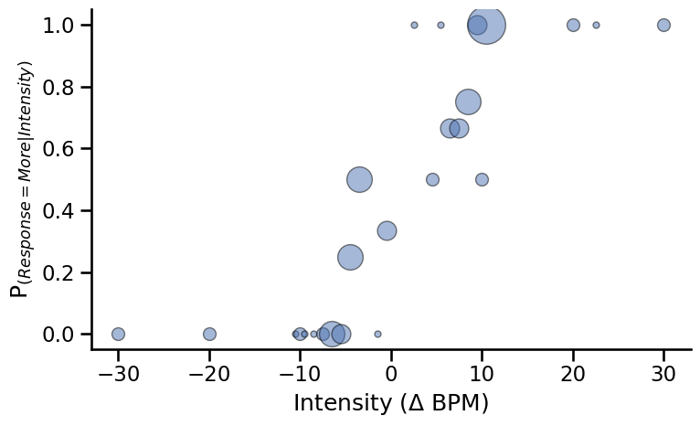
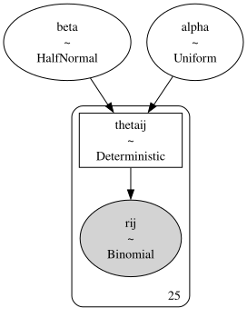
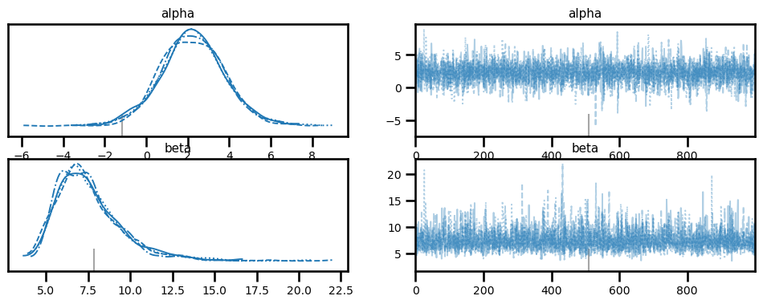
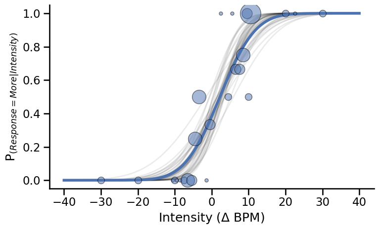

Fitting a psychometric function at the subject level#
Author: Nicolas Legrand nicolas.legrand@cas.au.dk
import pytensor.tensor as pt
import arviz as az
import matplotlib.pyplot as plt
import numpy as np
import pandas as pd
import seaborn as sns
from scipy.stats import norm
import pymc as pm
sns.set_context('talk')
In this example, we are going to fit a cummulative normal function to decision responses made during the Heart Rate Discrimination task. We are going to use the data from the HRD method paper [Legrand et al., 2022] and analyse the responses from one participant from the second session.
# Load data frame
psychophysics_df = pd.read_csv('https://github.com/embodied-computation-group/CardioceptionPaper/raw/main/data/Del2_merged.txt')
First, let’s filter this data frame so we only keep subject 19 (sub_0019 label) and the interoceptive condition (Extero label).
this_df = psychophysics_df[(psychophysics_df.Modality == 'Extero') & (psychophysics_df.Subject == 'sub_0019')]
this_df.head()
| TrialType | Condition | Modality | StairCond | Decision | DecisionRT | Confidence | ConfidenceRT | Alpha | listenBPM | ... | EstimatedThreshold | EstimatedSlope | StartListening | StartDecision | ResponseMade | RatingStart | RatingEnds | endTrigger | HeartRateOutlier | Subject | |
|---|---|---|---|---|---|---|---|---|---|---|---|---|---|---|---|---|---|---|---|---|---|
| 1 | psi | Less | Extero | psi | Less | 2.216429 | 59.0 | 1.632995 | -0.5 | 78.0 | ... | 22.805550 | 12.549457 | 1.603353e+09 | 1.603354e+09 | 1.603354e+09 | 1.603354e+09 | 1.603354e+09 | 1.603354e+09 | False | sub_0019 |
| 3 | psiCatchTrial | Less | Extero | psiCatchTrial | Less | 1.449154 | 100.0 | 0.511938 | -30.0 | 82.0 | ... | NaN | NaN | 1.603354e+09 | 1.603354e+09 | 1.603354e+09 | 1.603354e+09 | 1.603354e+09 | 1.603354e+09 | False | sub_0019 |
| 6 | psi | More | Extero | psi | More | 1.182666 | 95.0 | 0.606786 | 22.5 | 69.0 | ... | 10.001882 | 12.884902 | 1.603354e+09 | 1.603354e+09 | 1.603354e+09 | 1.603354e+09 | 1.603354e+09 | 1.603354e+09 | False | sub_0019 |
| 10 | psi | More | Extero | psi | More | 1.848141 | 24.0 | 1.448969 | 10.5 | 62.0 | ... | 0.998384 | 13.044744 | 1.603354e+09 | 1.603354e+09 | 1.603354e+09 | 1.603354e+09 | 1.603354e+09 | 1.603354e+09 | False | sub_0019 |
| 11 | psiCatchTrial | More | Extero | psiCatchTrial | More | 1.349469 | 75.0 | 0.561820 | 10.0 | 72.0 | ... | NaN | NaN | 1.603354e+09 | 1.603354e+09 | 1.603354e+09 | 1.603354e+09 | 1.603354e+09 | 1.603354e+09 | False | sub_0019 |
5 rows × 25 columns
This data frame contain a large number of columns, but here we will be interested in the Alpha column (the intensity value) and the Decision column (the response made by the participant).
this_df = this_df[['Alpha', 'Decision']]
this_df.head()
| Alpha | Decision | |
|---|---|---|
| 1 | -0.5 | Less |
| 3 | -30.0 | Less |
| 6 | 22.5 | More |
| 10 | 10.5 | More |
| 11 | 10.0 | More |
These two columns are enought for us to extract the 3 vectors of interest to fit a psychometric function:
The intensity vector, listing all the tested intensities values
The total number of trials for each tested intensity value
The number of “correct” response (here, when the decision == ‘More’).
Let’s take a look at the data. This function will plot the proportion of “Faster” responses depending on the intensity value of the trial stimuli (expressed in BPM). Here, the size of the circle represent the number of trials that were presented for each intensity values.
fig, axs = plt.subplots(figsize=(8, 5))
for ii, intensity in enumerate(np.sort(this_df.Alpha.unique())):
resp = sum((this_df.Alpha == intensity) & (this_df.Decision == 'More'))
total = sum(this_df.Alpha == intensity)
axs.plot(intensity, resp/total, 'o', alpha=0.5, color='#4c72b0',
markeredgecolor='k', markersize=total*5)
plt.ylabel('P$_{(Response = More|Intensity)}$')
plt.xlabel('Intensity ($\Delta$ BPM)')
plt.tight_layout()
sns.despine()

Model#
The model was defined as follows:
Where \(erf\) denotes the error functions and \(\phi\) is the cumulative normal function.
Let’s create our own cumulative normal distribution function here using pytensor.
def cumulative_normal(x, alpha, beta):
# Cumulative distribution function for the standard normal distribution
return 0.5 + 0.5 * pt.erf((x - alpha) / (beta * pt.sqrt(2)))
We preprocess the data to extract the intensity \(x\), the number or trials \(n\) and number of hit responses \(r\).
x, n, r = np.zeros(163), np.zeros(163), np.zeros(163)
for ii, intensity in enumerate(np.arange(-40.5, 41, 0.5)):
x[ii] = intensity
n[ii] = sum(this_df.Alpha == intensity)
r[ii] = sum((this_df.Alpha == intensity) & (this_df.Decision == "More"))
# remove no responses trials
validmask = n != 0
xij, nij, rij = x[validmask], n[validmask], r[validmask]
Create the model.
with pm.Model() as subject_psychophysics:
alpha = pm.Uniform("alpha", lower=-40.5, upper=40.5)
beta = pm.HalfNormal("beta", 10)
thetaij = pm.Deterministic(
"thetaij", cumulative_normal(xij, alpha, beta)
)
rij_ = pm.Binomial("rij", p=thetaij, n=nij, observed=rij)
pm.model_to_graphviz(subject_psychophysics)

with subject_psychophysics:
idata = pm.sample(chains=4, cores=4)
Auto-assigning NUTS sampler...
Initializing NUTS using jitter+adapt_diag...
Multiprocess sampling (4 chains in 4 jobs)
NUTS: [alpha, beta]
Sampling 4 chains for 1_000 tune and 1_000 draw iterations (4_000 + 4_000 draws total) took 2 seconds.
There were 1 divergences after tuning. Increase `target_accept` or reparameterize.
az.plot_trace(idata, var_names=['alpha', 'beta']);

stats = az.summary(idata, ["alpha", "beta"])
stats
| mean | sd | hdi_3% | hdi_97% | mcse_mean | mcse_sd | ess_bulk | ess_tail | r_hat | |
|---|---|---|---|---|---|---|---|---|---|
| alpha | 2.237 | 1.568 | -0.761 | 5.154 | 0.028 | 0.021 | 3063.0 | 2634.0 | 1.0 |
| beta | 7.537 | 1.957 | 4.398 | 11.045 | 0.035 | 0.026 | 3588.0 | 2270.0 | 1.0 |
Hint
Here, \(\alpha\) refers to the threshold value (also the point of subjective equality for this design). This participant had a threshold at estimated at 2.25, which is just slightly positively biased. The \(\beta\) value refers to the slope. A higher value means lower precision. Here, the slope is estimated to be around 7.46 for this participant.
Plotting#
Extrace the last 10 sample of each chain (here we have 4).
alpha_samples = idata["posterior"]["alpha"].values[:, -10:].flatten()
beta_samples = idata["posterior"]["beta"].values[:, -10:].flatten()
fig, axs = plt.subplots(figsize=(8, 5))
# Draw some sample from the traces
for a, b in zip(alpha_samples, beta_samples):
axs.plot(
np.linspace(-40, 40, 500),
(norm.cdf(np.linspace(-40, 40, 500), loc=a, scale=b)),
color='k', alpha=.08, linewidth=2
)
# Plot psychometric function with average parameters
slope = stats['mean']['beta']
threshold = stats['mean']['alpha']
axs.plot(np.linspace(-40, 40, 500),
(norm.cdf(np.linspace(-40, 40, 500), loc=threshold, scale=slope)),
color='#4c72b0', linewidth=4)
# Draw circles showing response proportions
for ii, intensity in enumerate(np.sort(this_df.Alpha.unique())):
resp = sum((this_df.Alpha == intensity) & (this_df.Decision == 'More'))
total = sum(this_df.Alpha == intensity)
axs.plot(intensity, resp/total, 'o', alpha=0.5, color='#4c72b0',
markeredgecolor='k', markersize=total*5)
plt.ylabel('P$_{(Response = More|Intensity)}$')
plt.xlabel('Intensity ($\Delta$ BPM)')
plt.tight_layout()
sns.despine()

System configuration#
%load_ext watermark
%watermark -n -u -v -iv -w -p pymc,arviz,pytensor
Last updated: Wed Jun 28 2023
Python implementation: CPython
Python version : 3.11.4
IPython version : 8.14.0
pymc : 5.5.0
arviz : 0.15.1
pytensor: 2.12.3
pandas : 2.0.2
pytensor : 2.12.3
pymc : 5.5.0
arviz : 0.15.1
numpy : 1.24.4
seaborn : 0.12.2
matplotlib: 3.7.1
Watermark: 2.4.2